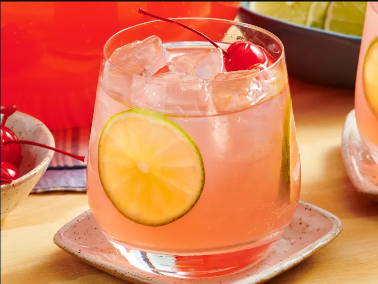

Home
Summer Punch

Description
This summer punch will definitely get your party started. It's easy to make and perfectly refreshing on hot summer days.
Ingredients
- 1 liter vodka, such as Tito's
- 1 (12-ounce) can frozen pink lemonade concentrate, partially thawed
- 1 (12-ounce) can frozen limeade concentrate, partially thawed
- 3 liters lemon-lime soda, such as Sprite
- 1 (10-ounce) jar of cherries
- 2 large limes, sliced
- ice, as needed
Steps
- Pour vodka, pink lemonade concentrate, limeade concentrate, Sprite, and the juice from 1 jar of cherries into a large beverage dispenser. Stir to melt the concentrates and float half of the lime slices on top.
- Serve over ice and garnish with lime slices and cherries.